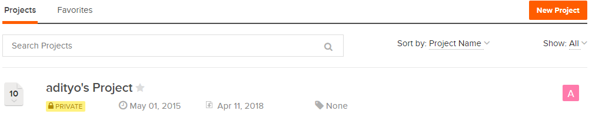

Upload survey form to ona.io
Download page as PDFLearning Objectives:
- Able to explain the benefits of using Ona.io
- Explain how to upload survey forms to the Ona.io server
After we have successfully created the survey forms that have been studied in the module Making Survey Forms for the ODK Collect & OpenMapKit Application, You will learn the platform used to upload survey forms to one of the platforms. The platform used in this material are Ona.io. Ona.io is a platform that can be used to place survey forms which will be used for field survey activities using ODK Collect or OpenMapKit. Here you will learn what can be done using Ona.io and how to upload the survey form into Ona.io.
I. Introduction to Ona.io
a. What is Ona.io
Ona.io is a social enterprise that builds infrastructure data for data collection needs in the field. They provide several platforms that can be used to assist data collection, one of which is a field data storage platform. You can upload your survey form to the server provided by Ona.io and then you use it for your field activities. Ona.io provides several capabilities that will assist data collection activities. One of them is:
- Statistics of the amount of data entered in the form of graphs and tables
- Location map of the distribution of data collected in the field
- Display of images that were successfully collected during data collection
- Ability to download data in several types of files such as CSV, XLS, KML, Osm or Json
b. Limitations in Ona.io
If you want to use the Ona.io platform you can create an account for free and then use the platform to upload survey forms. But there are some restrictions on using a free account on Ona.io:
- Can only create one private project
- For a private project can only hold 500 data entry.
- In one private project can accommodate as many as 10 types of survey forms
II. Survey Form Management on Ona.io
Now that you know what is Ona.io and its limitations, in this module you will now try to upload the survey forms that you created earlier in the Create Form Survey for ODK Collect and OpenMapKit module. If you have not created a survey form, you can download a sample survey form by accessing the link: http://bit.ly/sample_form_survey.
a. Creating an account on Ona.io
Before you upload your survey form, you must have an account on Ona.io first. To create an account on Ona.io click on the button Get Free Account and then enter your name (lowercase) which will be the url where you save the form and will later be used in the ODK Collect.

Display create account on Ona.io
b. Upload Survey Form
First time you successfully create an account on Ona.io, you will automatically create a personal project with your own name.

Private project with your own account name
To upload your form, click on the name of your own project. After successfully entering into your project. Click on the Add a form button and a new window will appear. Here you are asked to enter the XLSForm file. Select file your survey form. After you have successfully selected file your survey form, click on the Upload Selected File. The system will check whether your form has errors or not.

Display window when uploading survey forms
If you have successfully uploaded survey forms, a pop up of will appear Verified Form. Click on the Save form button to immediately save the survey form.

Select Save Form to save the verified form
c. Changing survey forms
If you make changes in survey forms that have been successfully uploaded to your project, you can update the survey forms. But the thing to remember is that when you update your survey form, if the form has already been filled out with some data, then there is a potential that the data already entered will be deleted. Therefore, before you change survey forms, it is recommended to download your data first in case something goes wrong.
To replace your survey form, click on the down arrow located to the far right of your survey form. Then select Replace Form.

Click on the right side of your survey form to bring up the Replace Form menu
If your survey form already contains some fields, a warning will appear so the users can understand the consequence when changing survey forms, especially replacing variables, Ona.io will use the new variables contained in the new survey form.

Warning When Changing the Survey Form
After you click thebutton I Understand, you will be directed to a window to upload the survey form. Select your new survey form and click Upload Selected file. After the form has been successfully validated, click on thebutton section Save form.
d. Delete / Deactivate Survey Forms
If you have survey forms that you want to delete / deactivate. You can do this by selecting the ↓ arrow located to the right of your survey form and then selecting **Delete Form **to erase or **Make inactive **to deactivate your form.
Display to delete or deactivate survey forms
Note:
If you choose to Delete Form. You will be asked to rewrite the name of your survey form before you can delete your survey form.
By selecting Make inactive, your survey form will not appear in ODK Collect during the stage of getting the blank form in ODK Collect.
e. Downloading XLSForm
You can download XLSForm format of the survey forms that you have created by clicking the arrow ↓ at the right part of your survey form and then select Download XLSForm.
f. Download Survey Results
To download data from the survey. You must first choose your survey form. After you have successfully selected the survey form, you will be directed to the survey form management page.

View to download survey data
Click on thebutton Prepare Data Export to start downloading your survey form data. After that you will be directed to choose the type of file you want to download.

Choice of file types that you can download
If your survey form does not use photos, you can choose CSV. But if your survey form uses photos, you can choose Zip folder of media attachment. The process to download survey data depends on how much data you produce in the data collection activity.
The survey data from Ona.io can later be used for various mapping purposes for example KML you can open it with Google Earth, with the OSM you can use JOSM application, and data with format CSV you can open with Spreadsheet or QGIS.
SUMMARY
Congratulations! Now you understand how to upload files survey form into one of the platforms that can be used to store survey forms online. There are several options you can use besides Ona.io to upload survey forms. Ona.io can be an option because it is very easy and free to use based on the terms previously explained.